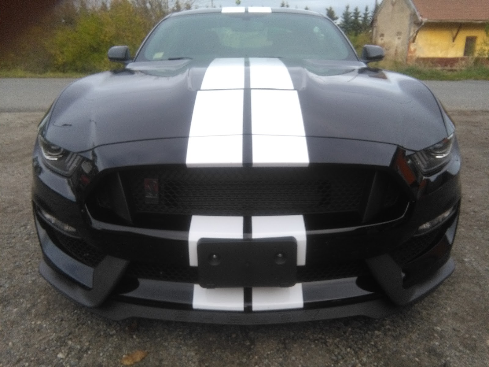
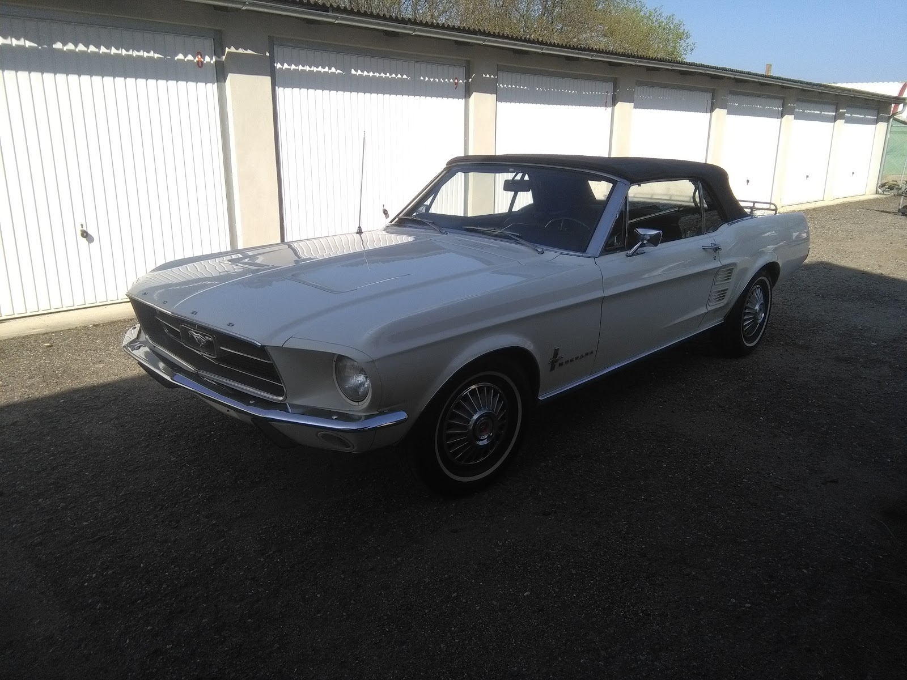
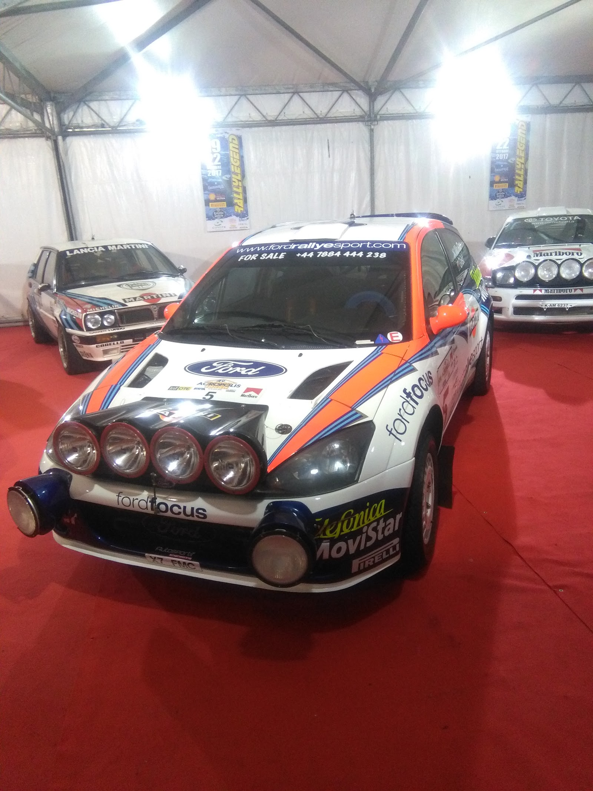

Mechanické opravy, diagnostika, příprava na STK a servis motocyklů — v dílně Za Nádražím v Třeboni. Spolupráce s FordServiceClub a zkušenosti se servisem historických i závodních vozů, jak dokládá i naše dílna. Dojíždíme po celém Třeboňsku.
Výměny oleje a filtrů, brzdy, tlumiče, rozvody, spojky. Diagnostika závad přes OBD, oprava elektroinstalace a odstranění poruch dle chybových kódů.
Servisní zázemí pro vozy Ford v rámci FordServiceClub, servisní knížka, doporučené intervaly údržby a diagnostika přizpůsobená konkrétním modelům.
Prohlídka vozu před termínem STK, kontrola brzd, osvětlení, podvozku a emisí, odstranění zjištěných závad tak, aby vůz prošel bez komplikací.
Sezónní příprava a údržba motocyklů, seřízení karburátorů i vstřikování, kontrola brzd a řetězu, oprava elektroinstalace.
Údržba a opravy starších vozů s karburátorem a 6V/12V elektroinstalací — v dílně stály například Triumph TR7 nebo Ford Mustang z roku 1967.
Zkušenosti se servisem upravených a soutěžních vozů — v dílně byl mimo jiné připravený rallyeový Ford Focus. Kontrola podvozku a bezpečnostní výbavy před soutěží.
Autoservis Za Nádražím v Třeboni se stará o osobní vozy i motocykly všech značek, spolupracuje s FordServiceClub a v garáži se pravidelně objevují i historická nebo upravená vozidla — od Triumphu přes Mustanga po rallyeový speciál.

Kromě běžného servisu se v dílně objevují i vozy mimo standardní nabídku autoservisů — jejich údržba vyžaduje jinou zkušenost než servis moderního auta.

Servis a údržba klasického amerického vozu — mechanika bez elektroniky, karburátor, dobové řešení brzd a podvozku.

Technická údržba a kontrola upraveného soutěžního vozu — podvozek, bezpečnostní klec a výbava připravená na rallye.
Zavoláte, popíšete závadu nebo požadovaný servis a domluvíte si termín přejímky vozu.
Vůz se prohlédne, případně připojí diagnostika. Zjistí se rozsah potřebných prací a dílů.
Sdělíme rozsah práce a orientační cenu. Po odsouhlasení se provede samotná oprava.
Vůz se vyzkouší, předá se s dokladem o provedené práci a vyměněnými díly k nahlédnutí.
„Nemohu nic, než pouze pochválit servis mého Forda. Kompletně opravené vozidlo se spousty chyb bylo velmi rychle dáno do provozu.“
„Nejlepší automechanik široko daleko, kvalitní náhradní díly, profesionální přístup, poradil si vždy se vším, a to mám atypická auta. Naprostá spokojenost, doporučuji.“
„Pan Pištora je v oboru jednička!!! Zkrátka profík.!!!“
„Vážený pane Pistoro, níže uvádíte, že jsem lhářka a nikdy jsem ve Vašem servisu nebyla. Dovolte, abych Vám tedy krátce připomněla, že můj fungl nový vůz Audi A5 coupé jste namísto výměny oleje naboural, neboť jste se s ním proháněl nepřiměřenou rychlostí po Třeboni. Za to jste byl společností Allianz zažalován, soud…“
Za Nádražím 1275, 379 01 Třeboň
Po–Pá 8:00–17:00
So, Ne zavřeno
Záleží na rozsahu závady, dostupnosti dílů a modelu vozu. Po diagnostice vždy sdělíme odhad ceny předem, než se do opravy pustíme.
Ano, motocykly všech značek — sezónní přípravu, seřízení karburátoru nebo vstřikování, kontrolu brzd a elektroinstalace.
Ano, projedeme vůz před termínem STK, upozorníme na zjištěné závady a co je potřeba opravit, aby vůz prošel bez problémů.
Ano, v dílně se pravidelně objevují i starší vozy s karburátorem nebo 6V/12V elektroinstalací, jako je Triumph TR7 nebo Ford Mustang.
Jednoduchý servis, jako výměna oleje nebo brzdových destiček, se často zvládne týž den. U rozsáhlejších oprav záleží na dostupnosti náhradních dílů.